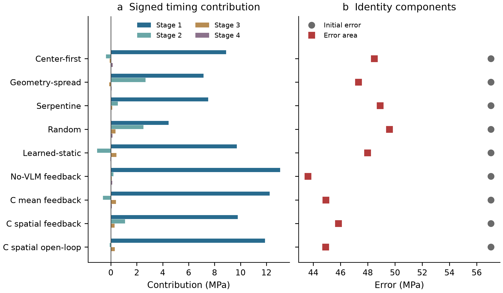
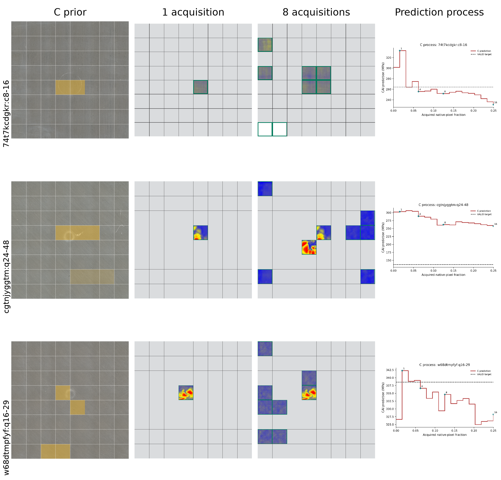
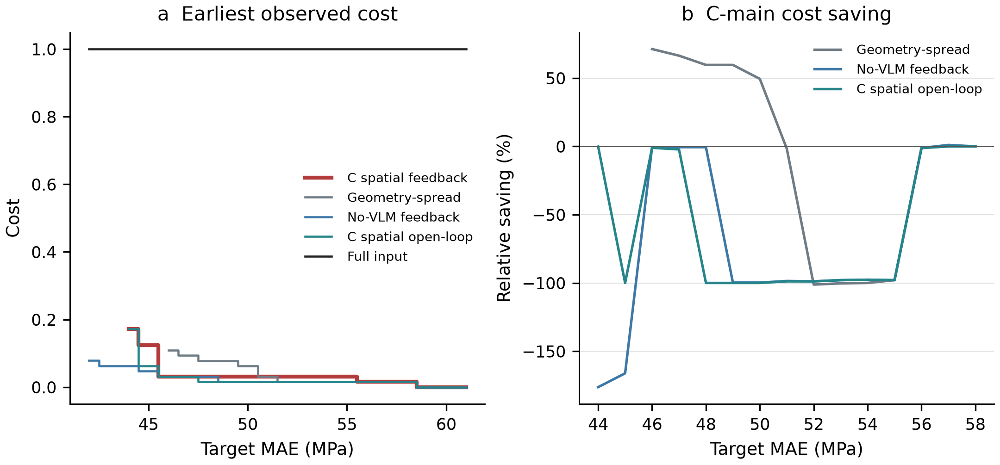

Author-review draft. Author metadata pending.
Image-based compression-after-impact assessment commonly assumes that a complete internal scan is available, although acquisition cost depends on which regions are measured and when they inform the estimate. We couple a frozen CAI predictor to learned acquisition policies that select cells from an 8x8 internal C-scan grid using surface information, a cached vision-language prior and acquired internal evidence. The current C version retains the original P0 prompt, introduces an exact readable R1 numbering render and retrains three VLM-conditioned actors while freezing six controls and all predictors. On 50 selected validation specimens, C spatial feedback achieved MAE 43.711 MPa and six-domain-equal trajectory area 45.847 MPa at a 25% native-pixel cap. Its endpoint MAE was lower than Geometry-spread by 3.199 MPa, while component and historical-version contrasts remained mixed across methods and domains. The complete-input MAE was 41.690 MPa, leaving a 2.021 MPa gap at the partial cap. Signed timing terms and three executed cases show that useful trajectories can still contain prediction reversals. The study provides a reproducible offline framework for comparing assessment quality throughout acquisition, bounded to validation-selected image replay rather than physical inspection-time savings.
Keywords: active acquisition; compression after impact; C-scan; multimodal learning; sequential decision making; vision-language model
Estimating the remaining compressive strength of an impacted composite requires connecting observable damage to a mechanical assessment. Surface appearances, internal damage images and compression-after-impact (CAI) strength measurements provide complementary information about that problem. Public composite-impact datasets associate these observations with corresponding specimens (Hasebe et al. 2022a, 2025a). They support image-based strength assessment and a further question: which internal observations should be acquired when only part of the image will be available? The value of an observation then depends on its contribution to an evolving strength estimate.
C-scan image regression establishes a route from internal damage information to mechanical assessment. Recent work directly predicts CAI strength and impact energy from C-scan images using a convolutional model (Mack et al. 2026). Selective acquisition adds a decision before that mapping can be applied to complete input. A policy must choose which missing region to observe next using evidence already available. Two sequences can eventually acquire the same subset yet provide different intermediate predictions because useful information becomes available at different stages. Assessing only the final estimate would overlook this distinction between observation content and availability.
Adaptive ultrasonic inspection provides a precedent for choosing subsequent measurements from earlier observations (Fuentes et al. 2020). Dynamic feature-acquisition methods more generally connect information requests with prediction utility and acquisition cost (Shim, Hwang, and Yang 2018; Janisch, Pevný, and Lisý 2019; Covert et al. 2023). For CAI assessment, the relevant utility is how the acquired evidence changes a strength estimate. Visually conspicuous damage may guide an initial observation, but its predictive value must be assessed together with other available information. This motivates a sequential objective that accounts for prediction error throughout acquisition as well as at the endpoint.
The modalities supply different information at different stages. A surface image is available initially, whereas internal content enters the state only after its region has been acquired. Surface cues can therefore initialize a search, and subsequent internal observations can change both the predicted strength and the next acquisition decision. Implementing this progression requires an explicit state interface. The policy must distinguish observed from unobserved regions and relate each permitted descriptor to its location, acquisition history and remaining budget. This interface connects evidence availability to the task objective rather than treating the next region as a fixed function of surface appearance alone.
We develop a state-dependent multimodal acquisition method with three distinct roles. A frozen vision-language model (VLM) supplies surface-region priors, a learned actor selects each internal cell, and a separate frozen predictor estimates CAI strength from the current observation set. The actor is trained using normalized trajectory error area together with terminal absolute error. At each acquisition step, the new internal descriptor and updated prediction enter its state, while the model parameters remain fixed. A common predictor across strategies holds the assessment mapping constant, enabling comparison of the subsets supplied and the timing of their availability.
The study makes three contributions. First, it formulates sequential C-scan acquisition around CAI prediction quality over the acquisition process, rather than only complete-image regression. Second, it connects surface priors, observed internal descriptors and the current strength estimate to subsequent acquisition through a state-dependent policy. Third, it characterizes this policy under a common predictor through same-cap quality, signed timing contributions and matched-quality acquisition requirements. Offline replay on 50 validation specimens compares shared, surface-conditioned and feedback-driven orders. The analysis asks where the resulting prediction value is accumulated and how that process relates to the cost of attaining an empirical quality target; the selection and evaluation scope is specified in Section 4.
Image-based assessment connects observable damage with a mechanical quantity that matters after impact. The public datasets of Hasebe and colleagues provide complementary resources: post-impact surface and internal images, and separately recorded compression-after-impact measurements (Hasebe et al. 2022a, 2025a). These resources support specimen-level correspondence between imaging and strength while preserving the difference between a damage observation and a load-bearing property. That distinction motivates the use of CAI error as the acquisition objective here. A region that is visually conspicuous is a candidate for inspection, but conspicuity alone does not establish its value for the strength estimate.
A direct journal neighbour is Mack et al.’s ResNet18-based framework for predicting impact energy and CAI strength from C-scan damage images (Mack et al. 2026). Their framework combines direct image interpretation with an analysis of feature-importance maps. This establishes image-to-strength regression as an existing research direction. The distinction in the present study is the sequential allocation of partial observations and the associated quality–acquisition trajectory. We do not compare their reported R² numerically with ours because the data preparation and evaluation protocols differ.
Image regression and selective observation address related but separable questions. A predictor must interpret whatever information is supplied, while an acquisition policy must decide which missing information to request. Improving either component can improve the combined system, but changing both together complicates interpretation of a comparison. The common frozen predictor used here deliberately fixes the assessment mapping across acquisition strategies. This design makes the supplied subsets and their ordering the experimental focus, rather than claiming that the selected regressor is the strongest possible model for complete C-scan images.
Autonomous ultrasonic acquisition already has a substantial conceptual precedent. Fuentes et al. formulate the selection of inspection locations through Bayesian optimization and robust outlier analysis (Fuentes et al. 2020). Their method sequentially updates a two-dimensional field of novelty indices to select locations with evidence of damage and estimate component damage probability. The pertinent difference is the task endpoint: we optimize a CAI regression trajectory under an image-pixel budget rather than the reported damage-indication objective.
This distinction also clarifies the status of the fixed controls. A geometry-spread order measures broad spatial coverage, while center-first concentrates observations near the image centre. Neither reproduces an entire autonomous inspection system, and serpentine image order alone does not model robotic travel efficiency. The controls instead provide transparent alternatives under identical replay rules. The controls isolate acquisition ordering under a common strength predictor.
Dynamic feature acquisition provides the broader learning formulation. Shim et al. jointly learn a classifier and an acquisition agent, using a set representation of observed features and actions that either acquire information or stop and predict (Shim, Hwang, and Yang 2018). Janisch et al. formulate costly-feature classification as sequential decision making, with feature requests and classification actions (Janisch, Pevný, and Lisý 2019). Their formulations show that prediction quality and information cost can be optimized together. The present policy instead uses a fixed acquisition cap and a frozen regression model, without a learned classification or stopping action. This is an application-specific choice that preserves a common assessment model for the comparison, rather than a general argument against joint learning.
Covert et al. develop a greedy dynamic-selection method based on conditional mutual information and amortized optimization (Covert et al. 2023). Their formulation uses a fixed feature-count budget with uniform costs; its regression result relates squared-error optimality to conditional variance. Our whole-cell native-pixel costs and absolute-error trajectory objective differ from those assumptions. We therefore use this work to position task-relevant acquisition, not as an optimality guarantee or a reproduced baseline. Policy-gradient learning supplies the optimization mechanism in our implementation (Williams 1992), while the manuscript contribution lies in the inspection-state contract, common-predictor comparison and process-level evidence.
Together, these lines locate the work between image-based mechanical assessment and sequential information acquisition. The method combines a surface-derived starting prior with evidence-dependent internal acquisition, then evaluates both intermediate quality and the final strength estimate. This connection is useful precisely because damage indication, classification utility and CAI regression error need not assign the same value to an observation. The supplementary closest-work matrix compares the task endpoints, available information and cost formulations.
The inspection task is to acquire a limited subset of an internal C-scan image while maintaining an estimate of compression-after-impact (CAI) strength. Let \(I^S\) and \(I^X\) denote the raw surface and internal images, and let \(y\) denote measured CAI strength in MPa. Each image is partitioned into an 8×8 grid indexed by \(\mathcal{I}=\{0,\ldots,63\}\). Independent cell encoding produces surface descriptors \(S\in\mathbb{R}^{64\times512}\) and internal descriptors \(X\in\mathbb{R}^{64\times512}\). An action reveals one previously unobserved internal descriptor. The raw images define the regions and native-pixel costs; \(S\) and \(X\) denote features throughout the decision model. All surface descriptors are available before internal acquisition begins.
After t actions, the observed set is \(\Omega_t\) and its binary indicator is \(M_t\). The cumulative acquisition fraction \(c_t\) is the number of unique acquired native image pixels divided by the number of pixels in the complete internal image. Grid boundaries are rounded on the native image, so cell costs need not be identical. We retain these actual pixel counts when checking affordability and evaluating a trajectory. With B=0.25, the legal action set contains only unobserved cells whose complete acquisition keeps \(c_t\) within B. Acquisition ends when this set is empty. This rule defines a budget-limited experiment without a learned stopping decision.
Let \(X_{\mathrm{obs},t}=M_t\odot X\) denote the logical visible buffer, with the cell mask broadcast across descriptor dimensions. A frozen predictor produces \(\hat{y}_t=P_{\mathrm{all}}(S,X_{\mathrm{obs},t},M_t,c_t)\). The policy selects the next cell from the currently legal set using surface information and, for feedback policies, the acquired internal evidence and current prediction. The true strength y is available to training and retrospective scoring, but is excluded from the decision state. This separation allows the acquisition policy to be trained for a downstream assessment objective without supplying the answer when selecting an observation. The comparison then asks which policy supplies a useful sequence of observations to the same predictor.
We evaluate both the trajectory and its final estimate. Let \(e_t=|\hat{y}_t-y|\) and let e(c) hold the most recently available error constant until the next acquisition completes. The normalized trajectory error and objective are
\[A(B)=\frac{1}{B}\int_0^B e(c)\,dc,\qquad J=A(B)+0.25e_T.\]
Both terms are measured in MPa and lower values are preferable. A(B) measures prediction quality over the available acquisition range, whereas the terminal term retains an explicit incentive for final quality. The last prediction is held from \(c_T\) to B if no remaining whole cell is affordable. Consequently, a trajectory cannot avoid its final holding cost by ending below the cap. This formulation couples what is acquired with when its effect becomes available.
A consistent spatial representation connects surface cues to candidate internal observations. Frozen ResNet18 encoders (He et al. 2015) produce a 512-dimensional descriptor for each of the 64 cells in each modality. Each cell is cropped before encoding, rather than extracted from a whole-image feature map that may already mix information across internal regions. The resulting surface and internal feature arrays each have shape 64×512. Corresponding grid coordinates are normalized to [0,1] in the row and column directions. These coordinates provide an explicit location reference for the predictor and acquisition policy; they do not establish a mechanically calibrated three-dimensional damage map.
Offline replay stores the complete internal feature array on the environment side so that any legal requested cell can be revealed. Model visibility is narrower than storage availability. Before cell mixing or spatial interaction, the predictor replaces unknown internal content with zero, and the spatial feedback actor replaces it with a learned mask vector. The binary observed flag distinguishes unknown cells from measured cells. Surface descriptors remain available everywhere. The actor also receives acquisition history and remaining budget, enabling it to distinguish a region that has not been visited from one that has already contributed to the current estimate.
A frozen Qwen2.5-VL-7B-Instruct model (Bai et al. 2025) supplies an additional surface prior. It examines clean and gridded surface views and returns candidate regions, ordinal confidence and cue-availability information. The acquisition actor receives numerical region indicators and confidence features, not the full generated explanation. Confidence is mapped from unknown, low, medium and high to 0, 1/3, 2/3 and 1, respectively; overlapping regions retain the highest confidence for a cell. These values encode an ordering of reported confidence rather than calibrated probabilities of internal damage. The VLM does not observe the hidden internal image, estimate CAI strength or produce a fresh language plan at every acquisition step.
The prior has a specific initialization role. At the first action, cells in the highest available reliable confidence level, restricted to medium or high, form a candidate set C0. The policy scores the affordable legal cells within that set. If the VLM is unavailable, reports no reliable cue, supplies no reliable region or leaves no affordable candidate, the ordinary legal set is retained. After the first acquisition, this hard restriction is removed while the numerical VLM features remain in the actor state. This design makes the initial prior explicit without constraining the entire sequence to a surface-selected region. Unavailability and an available response reporting no reliable cue are represented separately.
The information boundary can be summarized as follows.
| Information | Acquisition actor during evaluation | Frozen CAI predictor | Training/scoring side |
|---|---|---|---|
| Complete surface descriptors | Available | Available | Available |
| Surface VLM region features | Available in VLM variants | Not an input | Available |
| Acquired internal descriptors | Available in feedback variants | Available | Available |
| Unacquired internal descriptors | Hidden | Hidden | Stored only by replay environment |
| Observed mask and acquisition fraction | Available | Available | Available |
| Action history and remaining budget | Available to state-dependent policies | Not an input | Available |
| Current predicted CAI strength | Available in feedback variants | Output | Available |
| True CAI strength | Excluded | Excluded from input | Supervision and scoring only |
The current C prior keeps the original P0 prompt and changes only the numbered input rendering. The clean view is converted to RGB, rotated clockwise once and resized to a maximum edge of 1024 pixels. R1 overlays the same 8x8 grid with readable row-major labels 0-63 using the frozen font and inset contract. The model receives the clean view first and R1 second. A strict parser accepts only the registered region schema; one format-repair request is allowed after an invalid response. These operations alter neither P0 semantics nor the downstream 64-cell feature representation.
A common assessment model is necessary to distinguish acquisition choices from changes in the downstream regressor. All nine strategies are evaluated with the same selected MEAN_SC predictor. Surface and masked internal descriptors are separately projected to 64 dimensions. For each cell, their concatenation with its observed indicator and two coordinates passes through a two-layer cell multilayer perceptron with GELU activations. This yields a 64-dimensional cell representation that contains local surface information and, where measured, internal information.
The predictor forms two summaries: the mean over all 64 fused cell representations and the mean over measured cells. The measured mean uses a denominator bounded below by one, which makes the initial empty state well defined. The all-cell mean is not a surface-only branch: measured internal content is already present in its constituent cell representations. Concatenating both summaries with the actual acquisition fraction gives the regression-head input. The normalized output is transformed to MPa using the training-derived target mean and scale. The same computation accepts an empty internal set, a partially observed set or all 64 cells.
Neither the policy identifier nor the acquisition order enters this predictor. Therefore, for the same surface, observed cells and cost, its output is identical regardless of the policy that produced the state. Different acquisition sequences can still have different A(B), even when they eventually reveal the same subset, because intermediate predictions are available at different costs. This property gives the trajectory comparison its interpretation: changes in prediction quality arise through supplied observations and their timing, under a fixed assessment mapping.
Predictor training covers both sparse and dense observation sets. A random mask draw selects zero cells with probability 0.10, 1–16 cells with probability 0.60, 17–48 cells with probability 0.20, and all 64 cells with probability 0.10. Small sets use prefixes of Random, Center-first, Geometry-spread or Serpentine routes; larger partial sets use random permutations. These are sampling probabilities rather than fixed batch proportions. Specimens are sampled uniformly by domain and then within domain. Each batch contains 32 specimens and minimizes mean Huber loss on \((\hat{y}-y)/s\), with delta one and \(s=\max(\operatorname{std}(y_{\mathrm{fit}}),1\,\mathrm{MPa})\). The same fit-derived mean and scale map the regression head to MPa. This strength supervision differs from the actor’s trajectory cost. AdamW uses learning rate 0.0003, weight decay 0.0001 and gradient-norm clipping at one. Checkpoints are evaluated every 250 updates, with at most 2000 updates and patience four. The candidate comparison evaluates fixed validation prefixes independently of actor trajectories. It selected MEAN_SC at update 1750 as \(P_{\mathrm{all}}\), rather than assigning it in advance. Dense training masks provide predictor input coverage without extending the actor’s 0.25 acquisition budget.
During policy learning, a specimen in training fold \(k\) receives feedback from a frozen predictor \(P_{-k}\) fitted with its capture group excluded. Three such models use the selected architecture and fold-specific fit means and scales. Their checkpoints are still selected using the common validation library, so cross-fitting removes group overlap in fitting rather than all selection dependence. Evaluation in Algorithm 1 and the complete-input reference instead use \(P_{\mathrm{all}}\) alone. The out-of-fold predictors are not averaged into a deployment ensemble.
The spatial actor represents each candidate location jointly with the current assessment state. Surface and visible internal descriptors are each projected to 48 dimensions. Their concatenation with row and column coordinates, the observed flag, normalized action history, VLM region indicator and confidence is mapped to a 128-dimensional cell token. A separate query token represents cumulative cost, remaining budget, normalized current CAI prediction, VLM availability, the no-reliable-cue indicator and the fraction of observed cells. These 65 tokens pass through two Transformer encoder layers (Vaswani et al. 2017) with four attention heads and a feed-forward width of 256.
The resulting query representation supplies global context to every cell. An action head scores each concatenated contextual cell and query pair; illegal cells are excluded before selection. A separate value head estimates the remaining training cost from the query representation. The value head is a critic used to reduce policy-gradient variation, not the predictor of reported CAI strength. The architecture thus connects a local choice to the current observation set while retaining a distinct assessment model. Its spatial interactions operate on already masked features, so the global context cannot retrieve hidden internal content through attention.
Policy-gradient learning (Williams 1992) minimizes the expected trajectory objective over training specimens and sampled actions. Specimens are sampled by first choosing a domain uniformly and then a physical specimen within that domain. For each trajectory, the frozen cross-fitted predictor supplies absolute errors used to construct cost-to-go targets. The actor loss sums log action probabilities weighted by detached cost-to-go minus the critic estimate; a squared-error critic loss with weight 0.5 and an entropy term complete the optimization objective. Costs are normalized by the existing training target scale, and the discount factor is one. The shared static policy uses a zero baseline. This is task-loss-based policy learning, without an action-demonstration target.
During training, actions are sampled from the legal categorical distribution. During evaluation, the highest-scoring legal action is selected and the actor is evaluated again after the observation update. Parameters remain frozen during this sequence. The open-loop diagnostic removes internal descriptors and the current prediction from the decision computation but retains surface features, location, prior, acquisition history and budget. Its downstream predictor still incorporates the acquired internal information. The no-VLM diagnostic retains surface and internal feedback while removing the VLM features and initial restriction. These distinctions separate the information used to choose a cell from that used to assess the specimen afterwards.
Algorithm 1. Budget-limited task-driven acquisition
Input: surface descriptors S; cached VLM features V;
frozen actor pi_theta; evaluation predictor P_all;
replay environment E; native cell costs d; total budget B=0.25
Initialize M=0, H=0, X_obs=0, c=0, t=0
p = P_all(S, X_obs, M, c)
while True:
L = {i in {0,...,63}: M[i]=0 and c+d[i] <= B}
if L is empty: break
C = L
if t=0 and highest-reliable VLM candidates overlap L:
C = L intersect C0
z = (S, X_obs, M, H, V, p, c, B-c)
scores, _ = pi_theta(z)
a = argmax of scores over C
x_a = E.acquire(a)
X_obs[a] = x_a
M[a] = 1
t = t+1
H[a] = t/64
c = sum of native cell costs over measured cells
p = P_all(S, X_obs, M, c)
Record action, observation state, cost and prediction
Return acquisition sequence and predictions
Compute errors with y only on the training/scoring sideThe algorithm exposes a logical observation buffer. The replay implementation stores the full descriptor array in the environment but masks unobserved content before model mixing, giving the same visible-information interface. The actor substitutes its learned unknown-cell vector wherever M is zero. At evaluation, each observation updates the prediction and decision state while both networks’ weights remain fixed. The value-head output is unused for action selection. Native-cost comparisons use the floating-point tolerance specified in Supplementary Section S1.
The trajectory objective admits a direct decomposition using saved prediction changes. For an acquisition completed at \(c_t\), define \(\delta_t=e_{t-1}-e_t\) and
\[g_t=(1-c_t/B)\,\delta_t,\qquad A(B)=e_0-\sum_{t=1}^{T}g_t.\]
An error reduction contributes in proportion to the budget interval over which its updated prediction can influence the trajectory area. An error increase produces a negative contribution and is retained. An observation completed exactly at B has zero contribution to A(B), although its prediction change can affect the terminal term in J. The identity also includes the holding interval after a trajectory ends below B; no additional extrapolated observations are required. Supplementary material gives the telescoping derivation.
For descriptive analysis, we group these signed contributions by acquisition completion stage: (0,0.0625], (0.0625,0.125], (0.125,0.1875] and (0.1875,0.25]. A contribution assigned to a stage measures its weighted effect over the remaining budget, rather than an improvement confined to that stage’s integration interval. Aggregating first within an episode, then across repeated runs of each specimen, within domains and equally across domains preserves the estimand used for A. This is an accounting identity for the observed loss, not a causal allocation of gains to components or a new intervention on the acquisition policy.
The study uses source image datasets (Hasebe et al. 2022a) and CAI measurements (Hasebe et al. 2025a, 2025b) assembled into an existing image-based composite-impact cohort comprising 276 physical specimens in six source domains. Each specimen is associated with a surface image, a registered internal C-scan crop and a CAI-strength measurement. Labels originate from the source authors’ workbooks, with measurement semantics explicitly identified as CAI strength and normalized to MPa. The specimen identifier, source version, worksheet and cell location are retained in the provenance records. Surface-to-internal correspondence is inherited from the registered specimen manifest, which records exact specimen identity and image hashes. The experiment replays these image regions; it does not collect new ultrasonic measurements or treat a displayed C-scan raster as a raw acoustic waveform.
Source relationships are handled at the capture-group level. Specimens sharing a source image identity, path or registered crop identity are joined transitively before splitting. The resulting 259 groups include 17 groups containing multiple physical specimens. A deterministic per-domain ordering assigns the first floor(0.6 n) groups to TRAIN, the next floor(0.2 n) to VALID and the remainder to TEST. All members of a group stay in the same partition. This produces 161 training specimens in 152 groups, 50 validation specimens in 48 groups and 65 reserved specimens in 59 groups. Table 1 lists physical counts by source domain; the supplementary provenance table supplies source versions and verified configuration descriptions.
| Source domain and configuration | TRAIN | VALID | Reserved TEST | Total |
|---|---|---|---|---|
| 74t7kcdgkr: 8-layer cross-ply (Hasebe et al. 2022f) | 25 | 9 | 11 | 45 |
| cgtnjyggtm: 24-layer quasi-isotropic (Hasebe et al. 2022e) | 29 | 9 | 11 | 49 |
| w68dtmpfyf: 16-layer quasi-isotropic (Hasebe et al. 2022c) | 25 | 8 | 10 | 43 |
| xcmzfsbd9t: 24-layer cross-ply (Hasebe et al. 2022d) | 35 | 9 | 15 | 59 |
| yfxyg8jm46: 16-layer cross-ply (Hasebe et al. 2022b) | 25 | 8 | 9 | 42 |
| ykhs7s2dck: 8-layer quasi-isotropic (Hasebe et al. 2022g) | 22 | 7 | 9 | 38 |
| Total physical specimens | 161 | 50 | 65 | 276 |
| Total capture groups | 152 | 48 | 59 | 259 |
Table 1. Cohort composition. Configuration labels follow the version-1 source dataset descriptions. Per-specimen thickness is not inferred from layer count. All reported performance estimates use the 50 VALID specimens. Reserved TEST outcomes were not evaluated in this study.
The reported validation specimens were also used for checkpoint selection, and the underlying cohort includes specimens reused in earlier development. Accordingly, the results characterize selected validation performance rather than independent confirmation. Capture-group isolation addresses recorded image-source overlap across partitions, but does not by itself make this historically reused cohort an untouched external benchmark. No performance statement in this manuscript uses the 276-specimen total as its evaluation sample size.
We compare nine acquisition strategies under the same legal-cell rule, native-pixel cost and frozen predictor. Four require no policy training. Center-first ranks cells by distance to the grid centre. Geometry-spread starts at a corner and repeatedly selects the cell with the greatest minimum squared grid distance from previously selected cells, with deterministic index-based tie breaking. Serpentine alternates horizontal direction across successive rows. Random uses a seeded permutation of all cells; five saved repeats are included. These are explicit acquisition rules for the replay experiment, rather than representations of all industrial inspection practices.
Five learned strategies test different levels of decision information. Learned-static has 64 shared position logits and receives no specimen image or prediction. VLM spatial open-loop uses the surface, prior and acquisition bookkeeping but excludes acquired internal content and prediction feedback from action choice. The main VLM spatial feedback policy adds those feedback channels. No-VLM spatial feedback removes the VLM channels and initial candidate restriction while retaining surface descriptors. VLM mean feedback retains the main information sources but replaces Transformer interactions with a mean-feedback architecture. The last comparison is not capacity matched: the spatial actors have 378,978 parameters, compared with 91,650 for the mean actor and 64 for learned-static.
| Policy | Decision information | Structure | First-step VLM restriction |
|---|---|---|---|
| Center-first | Position only | Centre-distance order | No |
| Geometry-spread | Position only | Farthest-point order | No |
| Serpentine | Position only | Alternating row order | No |
| Random | Position only | Five seeded permutations | No |
| Learned-static | Shared position logits | 64 parameters | No |
| VLM spatial open-loop | Surface, VLM, mask/history, cost | Two-layer spatial actor | Yes |
| VLM spatial feedback | Open-loop inputs plus internal/prediction feedback | Two-layer spatial actor | Yes |
| No-VLM spatial feedback | Surface, internal/prediction feedback, bookkeeping | Two-layer spatial actor | No |
| VLM mean feedback | Same information as main | Mean-feedback actor | Yes |
Table 2. Acquisition-policy information and structure. The state-permission table in Section 3 specifies channel visibility. Across all controls, the assessment model still receives every actually acquired internal cell. The complete-input reference is listed separately at fraction 1.0 and uses all 64 internal cells plus surface descriptors with the same predictor. It has no observed acquisition trajectory and therefore no A(B).
Perception and assessment were frozen before the current actor runs. The C prior contains 211 terminal TRAIN/VALID records, including 6 exact pilot reuses and 205 newly generated primary jobs. The strict parser accepted 28 records after the single allowed format repair; 20 records remained schema-invalid after that repair and contributed zero prior features. The reserved TEST images and labels were not accessed. The frozen MEAN_SC checkpoint at update 1750 served as the common evaluation predictor, and the three original capture-group cross-fitted predictors supplied training feedback.
Only three C policies were retrained: spatial feedback, spatial open-loop and mean feedback. Each used its registered seed, 1250 logical AdamW updates, batches of 16, learning rate 3x\(10^{-4}\), weight decay \(10^{-4}\), gradient-norm clipping at one, critic weight 0.5 and terminal-error weight 0.25. Entropy decreased from 0.01 to zero by logical update. Candidate checkpoints at updates 250, 500, 750, 1000 and 1250 were evaluated on the same 50 VALID specimens. Selection minimized six-domain-equal A(B), retained the earliest checkpoint unless improvement exceeded \(10^{-12}\), and selected C spatial feedback (main) at update 250, C spatial open-loop at update 1250, C mean feedback at update 250. All 15 candidate weights and trajectories were retained.
The six controls were copied byte-for-byte from the frozen W3 trajectory matrix after their W2 checkpoint, feature-bank shards, cost files and specimen identities matched the current C bindings. The three historical A policies were retained only in a separate version-comparison sidecar. The primary matrix therefore contains 500 reused control rows and 150 new C rows. Random contributes five repeats per specimen; every other method contributes one, for 650 rows over the same 50 physical validation specimens.
One initialization was used for each current C policy, with seeds 2026091301, 2026091303 and 2026091305 for spatial feedback, open-loop and mean feedback. These are method-specific initializations rather than repeated seeds. The validation cohort also selected the reported actor checkpoints, so intervals and comparisons remain exploratory selected-validation evidence rather than independent confirmation.
The main common-cap grid is {0,0.0625,0.125,0.1875,0.25}. All lower-cap estimates are queried from prefixes of trajectories generated with a total acquisition budget of 0.25; the policy is neither retrained nor rerun with a different total budget for each reported cap. The actor therefore receives remaining budget \(0.25-c_t\), rather than a remaining budget defined by the queried cap. At each cap, we use the last prediction whose acquisition cost is at or below that cap. Actual fractions are reported separately because complete native cells may leave an unspent remainder. A supplementary event grid contains the 578 shared breakpoints obtained from saved episodes. Both grids retain current-state prediction reversals, with no monotonic correction or extrapolation beyond 0.25. Full-input quality is supported only at fraction 1.0.
At each cap, absolute and squared losses are averaged across Random repeats within each physical specimen and then pooled over the 50 specimens. RMSE is the square root of pooled MSE. R² is computed across specimens within each repeat and then averaged; predictions are not ensembled. In contrast, A and early A first average episode losses within a specimen, then average specimens within each domain, and finally weight the six domains equally. Early A uses an integration endpoint of 0.0625. These different aggregations mean a pooled endpoint metric and a domain-equal trajectory metric need not rank policies identically.
Reported uncertainty comes from the existing 5000-replicate, within-domain capture-group bootstrap, using seed 2026091401. Resampled groups carry all their physical members with their sampled multiplicities; the same saved weights support paired method comparisons. The 95% intervals are pointwise exploratory intervals conditional on selected validation checkpoints. They do not correct checkpoint selection, repeated historical use, post hoc analysis choices or multiple comparisons. We report their numerical ranges rather than interpreting them as independent confirmatory tests.
Matched-quality analysis first computes each method’s cohort-level MAE curve and then finds its earliest supported cap b*(q) satisfying \(\operatorname{MAE}(b)\le q\). Relative acquisition reduction against a control is \(1-b^*_{\mathrm{main}}(q)/b^*_{\mathrm{control}}(q)\), when both are reached and the control denominator is positive. The integer targets 41–61 MPa and 21 source-labelled anchors, including full-input quality, are descriptive empirical targets rather than prespecified engineering acceptance limits. Main-grid and event-grid results remain separate. Unreached targets, zero denominators, negative reductions and later recrossings are retained. The calculation compares population curves; it does not choose a label-informed stopping time for individual specimens.
Under the common 25% cap, C spatial feedback achieved a pooled MAE of 43.711 MPa, RMSE of 57.756 MPa and R2 of 0.668 on 50 selected validation specimens. The best non-adaptive strategy by six-domain-equal area was Geometry-spread, with endpoint MAE 46.910 MPa. The main policy’s endpoint MAE was lower by 3.199 MPa, with a 95% exploratory paired interval of [-0.359, 6.656] MPa. This fixed-cohort interval quantifies uncertainty but does not undo validation-based checkpoint selection.
Across the full observed range, C spatial feedback had A=45.847 MPa and early A=50.339 MPa. Geometry-spread had A=47.311 MPa. Area and endpoint error need not rank strategies identically because A weights each improvement by how long it remains available. Figure 2 preserves all nine held-error paths, including reversals, and the source tables report actual acquired fractions and ranges at each cap.
| Acquisition policy | A (MPa) | Early A (MPa) | MAE at cap (MPa) | RMSE at cap (MPa) | R2 at cap |
|---|---|---|---|---|---|
| Center-first | 48.475 | 51.821 | 48.027 | 65.223 | 0.577 |
| Geometry-spread | 47.311 | 51.880 | 46.910 | 62.278 | 0.614 |
| Serpentine | 48.911 | 52.170 | 48.013 | 63.041 | 0.605 |
| Random | 49.594 | 54.117 | 46.886 | 61.941 | 0.618 |
| Learned-static | 47.977 | 52.946 | 46.993 | 62.168 | 0.616 |
| No-VLM spatial feedback | 43.597 | 48.771 | 42.385 | 56.534 | 0.682 |
| C mean feedback | 44.926 | 48.657 | 44.066 | 60.593 | 0.635 |
| C spatial feedback (main) | 45.847 | 50.339 | 43.711 | 57.756 | 0.668 |
| C spatial open-loop | 44.907 | 49.154 | 43.917 | 58.523 | 0.659 |
| Complete input, fraction 1.0 | NA | NA | 41.690 | 53.944 | 0.711 |
Table 3. Current C common-predictor comparison. Partial policies use cap 0.25. Complete input is a separate observed point at cost 1.0 and has no partial-range area. Areas weight domains equally; endpoint metrics pool physical specimens after within-specimen repeat-loss averaging.

Against Geometry-spread, the main C policy had lower error by 1.464 MPa for area_mpa; the 95% exploratory interval was [-2.088, 4.691] MPa and included zero. Against C spatial open-loop, the main C policy had higher error by 0.940 MPa for area_mpa; the 95% exploratory interval was [-2.868, 0.890] MPa and included zero. Against no-VLM spatial feedback, the main C policy had higher error by 1.568 MPa for early_area_mpa; the 95% exploratory interval was [-5.397, 2.554] MPa and included zero. Against C mean feedback, the main C policy had higher error by 0.921 MPa for area_mpa; the 95% exploratory interval was [-2.484, 0.636] MPa and included zero.
| Contrast | Comparator | Measure | Control - C main (MPa) | 95% exploratory interval |
|---|---|---|---|---|
| best_nonadaptive | Geometry-spread | area_mpa | 1.464 | [-2.088, 4.691] |
| feedback | C spatial open-loop | area_mpa | -0.940 | [-2.868, 0.890] |
| vlm_early | No-VLM spatial feedback | early_area_mpa | -1.568 | [-5.397, 2.554] |
| spatial_vs_mean | C mean feedback | area_mpa | -0.921 | [-2.484, 0.636] |
Table 4. Prespecified C contrasts. Positive differences favour C spatial feedback for the stated measure. Intervals use 5000 paired capture-group bootstrap draws within domains and remain conditional on the selected checkpoints.
The component comparisons are descriptive rather than causal allocations. The policies were trained separately and can visit different states. A negative estimate is retained as evidence against a uniform benefit from the added component. Figure 3 reports the endpoint and area contrasts without filtering by direction.

Current C changes only the numbered rendering and the three retrained VLM policies; P0, predictors, feature bank, cost definition and six primary controls remain fixed. For C spatial feedback (main), historical A minus current C was -0.736 MPa ([-2.946, 1.455]). For C spatial open-loop, historical A minus current C was 1.594 MPa ([-0.500, 3.720]). For C mean feedback, historical A minus current C was 0.337 MPa ([-2.208, 2.988]). These comparisons isolate the observed version change within each policy name but remain selected-validation comparisons rather than a second independent experiment.
Domain-level A-minus-C values varied across the six source domains. This heterogeneity is retained in Figure 4 and the source table. The data do not identify a material-specific cause because domain, image source and predictor quality are not experimentally separated.

The largest signed main-minus-open-loop timing difference occurred in completion stage 2, where it was 1.200 MPa. The four stage differences were -2.109, +1.200, -0.031, +0.000 MPa. These terms satisfy A=e0-sum(g) and preserve negative contributions. They describe when saved prediction changes affected the remaining budget interval, not a causal percentage attributable to feedback.
Individual acquisitions did not guarantee monotonic improvement. 369 of 794 current main-policy events increased absolute prediction error. This adverse-event count is compatible with a favourable overall area when earlier or larger reductions dominate. Figure 5 shows all signed stage contributions and the identity components.

The three prespecified cases were regenerated from the selected current C main-policy trajectories and current C priors. Surface candidates, the real first action, measured states after 1, 4 and 8 acquisitions, the endpoint and prediction process are new outputs. The measured set grows monotonically on the strict 8x8 grid, while predictions may reverse.

Equal-quality comparisons use the earliest observed population-curve crossing on both the five-cap grid and the union of saved event costs. Unreached targets, negative savings, zero denominators and later recrossings remain in the source tables. Figure 7 displays the complete integer target range rather than selecting a favourable threshold. These population first passages do not define a label-free stopping policy for individual specimens.

The complete-input predictor achieved MAE 41.690 MPa, RMSE 53.944 MPa and R2 0.711 at cost 1.0. Current C spatial feedback retained an endpoint MAE gap of 2.021 MPa at the 25% cap. No unobserved segment between 0.25 and 1.0 is interpolated. The comparison therefore bounds the observed image-acquisition trade-off without converting native-pixel fraction into physical inspection time.
Taken together, the current evidence supports an offline task-driven acquisition analysis on a selected validation cohort. It does not establish independent generalization, causal component shares or deployment-time savings. Those questions require new specimens, repeated policy seeds and a physical acquisition-cost model.
Task-driven acquisition links the choice of internal observations to the evolving compression-after-impact estimate. The current C implementation keeps the original surface-perception prompt, uses an exact readable 8x8 numbering render and retrains the three VLM-conditioned actors against the same frozen predictor and data bindings.
On the 50 selected validation specimens, C spatial feedback achieved 43.711 MPa endpoint MAE and 45.847 MPa six-domain-equal trajectory area under a 25% native-pixel cap. Comparisons with non-adaptive acquisition, open-loop feedback, no-VLM feedback, mean feedback and historical A were mixed rather than uniformly favourable. Signed timing contributions and 369 adverse prediction changes among 794 acquisitions show why an informative sequence need not improve after every action.
The framework supports reproducible same-cap, equal-quality and timing analyses under a common assessment mapping. Its evidence remains conditional on one policy seed per method, validation-based checkpoint selection and offline image replay. Independent specimens, repeated training seeds and physical travel, coupling and latency costs are required before inferring deployment savings.
Author details, contributions, funding, competing interests and final data/code release information: [to be completed by the authors; see AUTHOR_INPUTS.md]. Public source datasets and version-specific DOIs are cited in the manuscript.
During manuscript preparation, OpenAI Codex assisted with drafting, organization, English expression, reference screening and verification support, figure-programming assistance and document preparation. The exact underlying model identifier remains to be verified. Research use of Qwen2.5-VL is described separately in Section 3. Human scientific review and approval of the final manuscript remain pending; the authors retain responsibility for the submitted content.